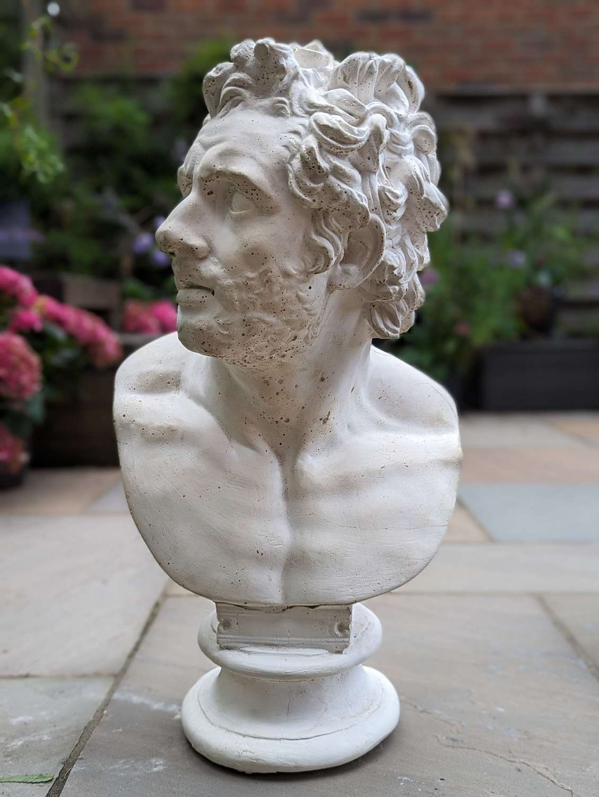

Aquiles, é um herói e semideus da mitologia grega. Sua fama veio principalmente por seu papel decisivo na Guerra de Troia, onde sua bravura e sua ira moldaram o destino do conflito o que o fez um dos maiores guerreiros mitológicos da Grécia Antiga, sua mãe era uma ninfa e seu pai, um mortal, o rei dos mirmidões Peleu
Segundo a mitologia, Zeus e Poseidon desejavam casar-se com Tétis, mas uma profecia revelou que o filho dela seria mais poderoso que o pai. Para evitar ameaças ao Olimpo, Zeus obrigou Tétis a se casar com o mortal Peleu. Dessa união nasceu Aquiles, temendo o destino do filho, Tétis, tentou torná-lo imortal. Em uma das versões do mito, ela o mergulhou no Rio Estige, cujas águas conferiam invulnerabilidade. No entanto, segurou-o pelo calcanhar, deixando essa parte desprotegida.
Antes da guerra, uma nova profecia afirmava que Troia só poderia ser conquistada com a presença de Aquiles. Para protegê-lo, Tétis o escondeu na corte do rei Licomedes, disfarçando-o de mulher. No entanto, Odisseu, rei da ilha de Ítaca, descobriu o disfarce e convenceu Aquiles a lutar ao lado dos gregos onde foi uma peça-chave para várias vitórias gregas.
No entanto, durante a Guerra, havia Agamenon o comandante supremo dos exércitos gregos, Aquiles era o maior guerreiro, mas não o chefe. Ambos eram líderes poderosos e orgulhosos, após um combate Agamenon tomou Briseida como sua escrava, mas na verdade ela era o prêmio de Aquiles com quem ela tinha um forte vínculo, para Aquiles, isso foi uma humilhação pública, ele se sentiu desonrado por Agamenon, que o tratou como um subordinado qualquer, apesar de sua importância militar.
 Como consequência, Aquiles se retirou da guerra e se recusou a lutar pelos gregos. Durante sua ausência, os troianos ganharam vantagem, mas ai surge uma nova figura: Pátroclo, melhor amigo de Aquiles e soldado grego,ele implora pela voltado colega, que se recusa, mesmo com os Troianos quase queimando os navios gregos, sem opções e desesperado, escondido ele rouba a armadura de Aquiles, e lidera o um ataque contra os Troianosele consegue salvar os portos deseus inimigos mas para seu desespero ele e atacado por Heitor, principe e o melhor combatentente de troia, onde e fatalmente morto, uma feroz batalha por seu corpo é iniciada e Heitor veste a armadura deste. Os gregos retornaram ao acampamento com o corpo de Pátroclo, informando Aquiles da morte de seu estimado amigo. Tomado pela raiva e sentimento de vingança contra Heitor, Aquiles deixa de lado sua desavença com Agamenon,de presente ele ganha uma nova armadura feita por Hefesto
Como vingança aquiles desafia Heitor para um duelo, mas algumas coisas devem ser ressaltadas em algumas versões, Aquiles e filho de zeus, em quase todas ele e um semideuz, com invunerabilidade, ou com uma armadura divia, ja Heitor e apenas um gerreiro, um bom guerreiro, mas só, suas habilidades são comuns nada de explendido, alguns dizem ate que ele e só matou Pátroclo pois achava que era Aquiles, a batalha sera desigual mas Heitor não se importa, ele aceita o desafio, mas aquiles e mais rapido e mais habilidoso e o derrota com facilidade, mas Aquiles não está contente só com a derrota de Heitor, ele pega e arasta seu corpo por toda a Troia, em sua carruagem.
Porém, o destino havia guardado algo para Aquiles,pelas mãos de Páris, irmão do Heitor e o culpado de toda a guerra de troia, durante a invsão final a Troia ele disparou uma flecha envenenada, que foi guiada pelo deus Apolo e acertou calcanhar de Aquiles o único ponto vulnerável de seu corpo. O herói caiu morto, cumprindo a profecia de que teria uma vida curta, porém gloriosa.
DIANA, Daniela. Aquiles. Toda Matéria, [s.d.]. Disponível em: https://www.todamateria.com.br/aquiles/. Acesso em: 12 jun. 2025